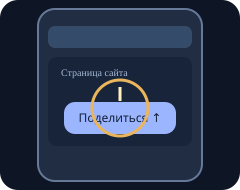
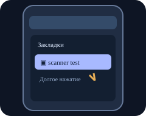
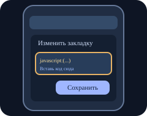
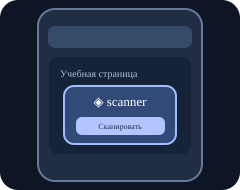

Установка панели Safari
Если закладка scanner test уже есть, скопируй новый код и замени её адрес (шаг 4). Для первой установки создай JavaScript-закладку. Сам браузер не разрешает сайту автоматически вставлять код в закладки.
Автоматическое сканирование читает доступный текст, но не может надёжно прочитать изображения, схемы и графики. Сделай скриншот и прикрепи его через 📎 в панели.
1. Скопируй код установки
Нажми кнопку ниже. Код должен начинаться с javascript:.
Если копирование не сработает, выдели код и скопируй вручную.

2. Добавь закладку
Открой эту страницу в обычном Safari → нажми «Поделиться» → «Добавить закладку». Назови её scanner test.

3. Найди новую закладку
Открой меню «Закладки». Удерживай scanner test и выбери «Изменить».

4. Вставь код
В поле адреса удали старую ссылку, вставь скопированный код и нажми «Сохранить».

5. Запусти панель
Открой учебную страницу в Safari, зайди в закладки и нажми scanner test. Панель появится поверх страницы.
Как открывать панель позже?
Открой любой поддерживаемый учебный сайт → Закладки Safari → scanner test. Ничего заново устанавливать не нужно.
Чтобы развернуть или свернуть панель, используй кнопку «−» / «+». За верхнюю строку панель можно двигать. Это именно закладка, не отдельная вкладка.
Как подключить уже существующий аккаунт?
Авторизуйся на основном сайте. Открой панель, нажми «Подключить аккаунт», подтверди его во вкладке, вернись к заданию. Повторно вводить код приглашения не нужно.
На некоторых сайтах Safari блокирует такие панели или передачу данных. Это браузерное ограничение, а не новый аккаунт.
Иллюстрации схематичные; кнопки Safari могут выглядеть иначе в разных версиях iOS.